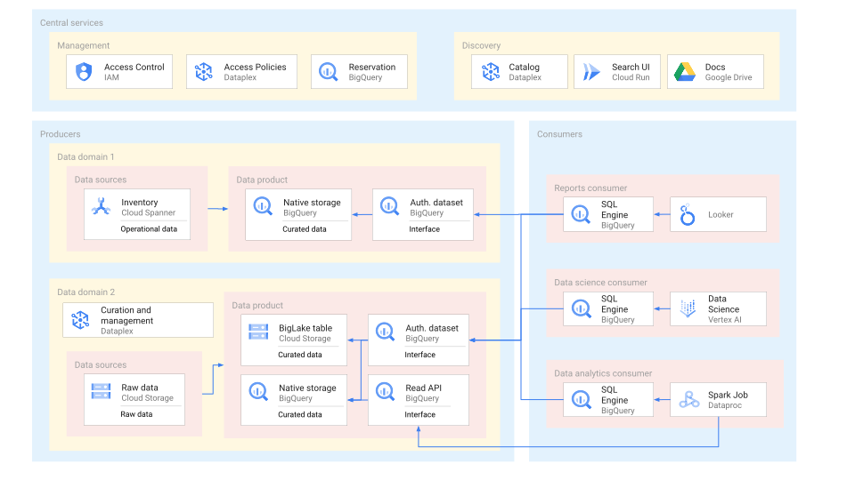
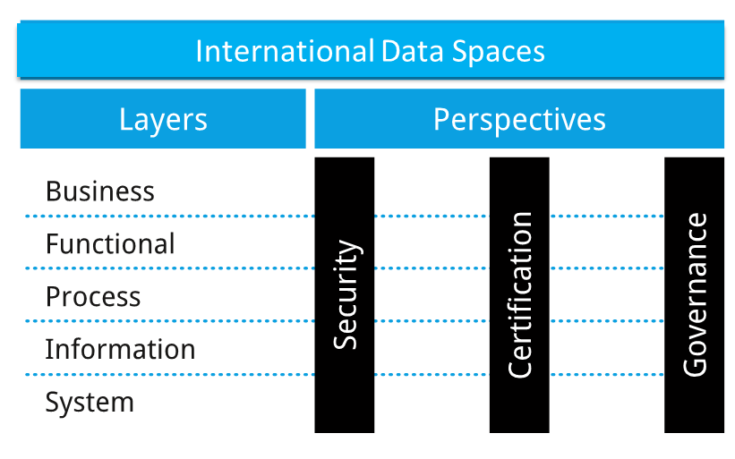
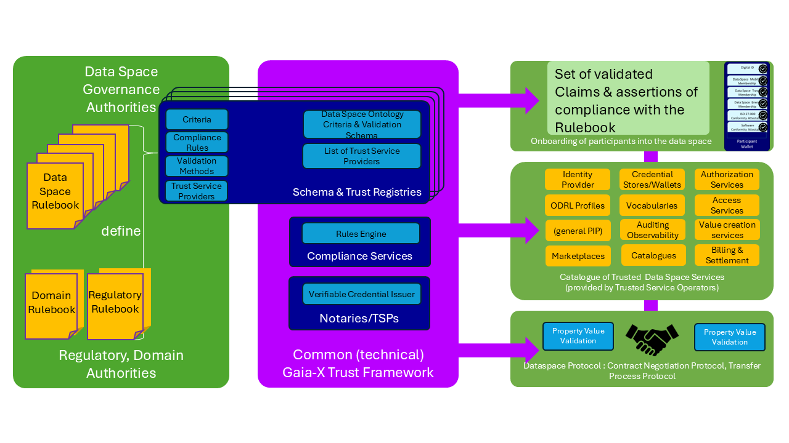
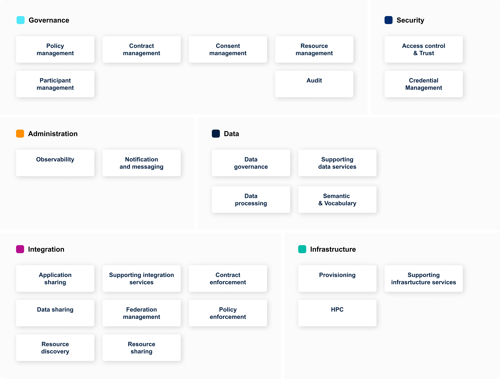

先给结论：编织的是关系、语义与控制
数据编织（Data Fabric）不是一种数据库，也不等于把数据搬进同一个湖。它是一种仍在演进的数据管理与集成设计：以持续采集和分析的主动元数据作为智能控制面，把分布在数据库、湖仓、SaaS、流、边缘和合作伙伴处的数据连接起来，并按场景组合虚拟查询、ETL/ELT、CDC、事件流、API 与缓存，交付可信、受治理的数据与数据产品。
先忘掉“Fabric”：数据为何存在？
企业保存数据，不是为了“拥有更多字节”，而是为了以更小的不确定性做出更好的行动。把问题还原后，数据系统是一条证据供应链。
可用信息 ≠ 原始数据
一个名为 revenue 的字段，只有同时知道币种、会计口径、统计周期、来源系统、转换逻辑、更新时间、质量状态、访问限制和负责人，才可能成为可决策的信息。元数据不是边角料，而是数据获得意义所必需的上下文。
价值来自闭环，而非堆积
数据只有在被合适的人或机器及时找到、正确解释、合法使用并转化为行动时才产生价值。反馈结果还要返回系统，修正质量规则、模型和管道。没有反馈，数据平台只能持续“供数”，无法学习哪种供给真正有效。
三个不可约问题
数据在哪里？
源可能位于本地、云、SaaS、合作方或边缘；数据移动受到成本、时延、主权和源负载约束。
它到底表示什么？
Schema 只能说明结构，不能裁定业务口径。语义对齐最终需要领域知识、责任人和版本治理。
为何应该相信并允许使用？
答案来自血缘、质量、时效、身份、用途、同意、策略与审计证据，而不是一张“已治理”标签。
任何一项接近 0，海量存储也不会自然转化为价值。该式为分析框架，不是财务计量公式。
数据编织究竟是什么？
一个严格而可操作的定义，应同时说明对象、机制和结果。
这与 Gartner 的公开定义基本一致：目标是“灵活、可复用、增强式的数据集成”，并且“按定义将被动元数据转化为主动元数据”。IBM 则强调它是一种设计方法而非某一件软件，可跨本地和多云提供统一访问视图。[S1][S2]
“织物”隐喻中，分别是什么？
经线：稳定的治理骨架
身份、术语、实体、策略、质量规则、数据契约、血缘和责任结构，决定一块数据在全生命周期中的基本约束。
纬线：变化的数据流
批处理、CDC、流、联邦查询、API、复制、缓存和模型特征，把不同速度、格式和位置的数据按需交付。
织机：主动元数据闭环
采集运行与使用信号，推断关系和影响，推荐或执行动作，再观察结果。它让静态目录变成系统的“感知—决策”层。
什么不是数据编织
| 常见误认 | 为什么不够 | 在编织中的正确位置 |
|---|---|---|
| 一个中央数据湖 / 湖仓 | 统一了部分存储，未必统一语义、策略和跨源交付。 | 是重要数据节点，可同时存在多个。 |
| 数据目录 | 如果只搜索和登记，仍是被动元数据。 | 发现入口与元数据图的一部分。 |
| 数据虚拟化 | 联邦查询不能独自解决源负载、跨源优化、质量与治理。 | 多种数据交付方式之一。 |
| ETL/ELT 平台 | 管道移动和转换数据，但通常不了解全局语义、责任和用途。 | 数据平面的物化执行器。 |
| 知识图谱 | 图能表达实体与关系，却不等于接入、质量、编排和访问控制。 | 语义与元数据控制面的关键技术。 |
| 某厂商的 “Fabric” 产品 | 产品名不构成架构能力证明。 | 需逐项验证开放性、元数据激活和跨平台范围。 |
反事实检验：什么时候不需要建设 Data Fabric？
架构的价值来自它消除的约束；若约束不存在，增加一层控制面只会增加成本。Data Fabric 不是所有数据团队的“成熟终点”，更不是规模尚小时必须预付的复杂度。以下场景通常应先采用更简单的方案。
数据和消费者都很少
一个团队、一个权威数据库、少量稳定报表，且访问策略单一时，规范建模、测试、备份和一个轻量目录可能已经足够。为了“未来可能扩张”部署联邦目录、知识图和策略引擎，往往比维护几条清晰管道更昂贵。
物理集中没有实质障碍
如果数据量可控、迁移合法、时延宽松、源系统负载允许，而且消费者都在同一分析平台，优先建设治理良好的仓库或湖仓。逻辑联邦不是目的；只有在集中化的边际成本超过其一致性收益时，分布式编织才开始占优。
问题本质是责任缺位
“收入”没有统一定义、数据质量无人负责、权限审批没有负责人时，引入主动元数据不会自动补齐组织决策。应先建立 owner、口径、升级路径和最低治理规则；否则 Fabric 只会更快地传播未解决的冲突。
路径是硬实时且完全本地
设备控制、基带处理等确定性环路应使用本地状态、静态契约和预验证制品。跨域 Fabric 可以在环外供应模型和策略、回收证据，但不应成为每次动作的在线依赖。把统一访问置于确定性之前，是类别错误。
只是一次性迁移或合并
有明确终点的系统下线、一次性历史归档或单次并购迁移，更适合使用可审计迁移管道和核对清单。只有当多源、多消费者和持续变化会长期存在时，建设可复用元数据反馈网络才可能获得复利。
基础工程尚不可靠
源系统没有稳定标识、时间戳混乱、部署不可重复、权限无法自动执行时，先修复可观测性、身份和软件交付基础。主动自动化建立在可靠信号与执行器之上；输入不可信时，自动化只会扩大故障半径。
为什么会有“编织”？
不是因为行业需要一个新名词，而是集中式统一和点对点集成同时碰到了规模边界。
点对点连接会产生组合爆炸
当每个数据源分别为每个消费者建一条专用管道，连接关系上界随节点数近似按 n(n−1)/2 增长。真实系统虽然不会全连接，但任何 schema、权限或业务口径变更都可能沿依赖链传播。工程师脑中的隐性映射越多，维护越脆弱。
10 个节点 → 45；100 个节点 → 4,950；1,000 个节点 → 499,500
“全部集中”也不是免费答案
数据湖与云仓降低了分析存储成本，但无法取消数据驻留、出云费用、边缘时延、事务源负载、跨组织主权和超大规模复制。更重要的是，把数据放到一起并不会自动统一“客户”“故障”“活跃”或“覆盖”等业务含义。
六种同时增长的异构性
位置异构
本地、多个云、SaaS、边缘、设备和合作伙伴长期共存。
结构异构
关系表、对象、时序、图、向量、文档、音视频和模型制品并存。
速度异构
月报、日批、秒级 CDC、毫秒事件和离线归档有不同时间语义。
语义异构
同名异义、异名同义、不同粒度与不断演进的指标版本。
治理异构
身份域、司法辖区、用途、同意、保留期和合同义务不同。
消费异构
人类分析、应用 API、AI 训练、RAG 和闭环控制需要不同 SLA。
它不是凭空出现，而是多条路线汇流
联邦数据库
研究如何统一访问自治、异构、分布式数据库，奠定“不必先集中”的技术祖先。[S6]
信息编织、数据虚拟化与企业服务
逻辑视图、服务化访问和元数据目录开始覆盖多个物理来源，但元数据多用于记录与审计。
数据湖、逻辑数据仓库与混合云
原始数据保留和多平台共存成为现实；NetApp 也在混合云存储移动语境中使用 Data Fabric 名称。早期同名概念并不等于今天的主动元数据架构。[S7]
主动元数据成为定义中心
目录、血缘、知识图、可观察性与 ML 推荐相结合，Data Fabric 被系统化为增强式集成设计。
从企业内编织走向 AI 上下文与数据空间
数据产品、开放目录、RAG、AI Agent、机密计算和跨组织数据空间，把 Fabric 的边界从“找数”扩展到“可信行动”。
一张完整的数据编织由什么组成？
没有唯一产品拓扑，但完整能力必须覆盖数据面、控制面、消费面和贯穿式保障。下面的七层模型是依据 Gartner、IBM、开放元数据与数据空间规范综合得到的分析框架，并非正式标准。
连接与采集
连接数据库、SaaS、文件、消息、API 和边缘；识别 schema、采样质量并捕捉变更。关键不是连接器数量，而是连接行为能否产生可追踪元数据。
集成与编排
批、ELT、CDC、流、复制、缓存、API 与联邦查询必须共存。选择依据是时延、成本、源负载、可用性、一致性和数据驻留，而不是固定教条。
统一元数据图
关联表、字段、术语、实体、作业、查询、用户、策略、质量、模型和动作。它可以是中央图、联邦目录或混合索引；统一的是标识与关系，不一定是一个物理库。
语义与知识
术语表、指标定义、分类法、本体、实体解析和知识图谱解决“结构相同但含义不同”。机器可以建议匹配，领域负责人必须裁定高影响语义。
质量、血缘与可观察性
持续测量新鲜度、完整性、分布漂移、合同违约与下游影响；把 dataset/job/run 事件接入端到端 trace。OpenLineage 提供开放血缘事件，但不等于完整 Fabric。[S8]
安全、隐私与治理
身份、最小权限、动态脱敏、用途限制、同意、驻留、保留、删除、审计和策略即代码贯穿所有层。治理不是在交付末端盖章，而是参与每次计划和执行。
数据产品与服务
将可复用输出包装为有 owner、schema、质量目标、语义、访问方式、许可和生命周期的数据产品。消费者依赖合同，而不是依赖某位工程师对表名的口头解释。
主动元数据与自动化
检测变更，计算影响，推荐可复用映射，自动生成测试或路由；对高风险授权、删除和网络动作保留审批、仿真、熔断与回滚。自动化的成熟标志不是“无人”，而是边界明确且证据完整。
主动元数据：从“档案馆”变成“神经系统”
运行事件
语义关系
变化异常
与候选动作
风险校验
可回滚
效果与证据
例如：源字段类型变化后，系统不只是更新目录，而是定位受影响的管道、指标和模型，暂停高风险发布，生成兼容性测试，通知 owner，并在批准后重建物化视图。只有元数据真正触发了跨系统动作，才称得上“主动”。
它与 Mesh、湖仓、中台和知识图谱是什么关系？
这些概念分别回答不同问题。把它们放在同一条采购清单上比较，往往从一开始就错了。
| 范式 | 首要问题 | 性质 / 核心机制 | 与 Data Fabric 的关系 |
|---|---|---|---|
| Data Fabric | 如何跨异构环境连接、理解、治理并自动交付数据？ | 技术架构设计；主动元数据、语义、编排、多模式集成。 | 本体。 |
| Data Mesh | 大组织中谁对数据负责，如何扩展所有权？ | 社会—技术运营模型；领域所有权、数据即产品、自助平台、联邦治理。 | Fabric 可提供 Mesh 的共享技术底座；Mesh 补上组织责任。[S9] |
| Lakehouse | 如何在湖式存储上统一仓库事务、BI 与 ML？ | 存储计算平台；开放文件、事务表格式、统一引擎。 | 是 Fabric 可连接的一个或多个数据节点。[S10] |
| 数据中台 | 如何沉淀企业共享数据能力并快速服务前台？ | 中国语境中的平台、资产、服务、组织和运营体系，实践常偏中央化。 | 可采用 Fabric 设计改造跨云和分布式接入；二者不能直接互译。 |
| 知识图谱 | 如何显式表达实体、关系、概念与规则？ | 图数据模型、实体链接、本体和推理。 | 常是 Fabric 的语义“神经网络”，但不负责全部集成与交付。[S11] |
| Data Space | 自治组织如何在保有主权的同时交换数据？ | 跨组织身份、目录、合同协商、连接器和使用控制。 | 是企业 Fabric 跨越组织边界时的信任与协议层。 |

{kind=link}
未来：从数据集成层走向可信智能控制面
下列趋势不是“十项独立产品”，而是一条因果链：数据越分布，越需要元数据事件；机器消费越多，越需要显式语义；自动化权限越大，越需要策略、证明和可回滚性。
元数据事件化
Catalog 从定时扫描升级为事件驱动：schema、PII、质量、成本、查询和权限变化立即形成元数据事件，触发影响分析、SLO 告警和策略复核。OpenLineage、DataHub 等已验证了这种工程方向。[S8]
语义控制平面
术语表将扩展为版本化 ontology / knowledge graph，关联业务实体、指标、数据产品、模型、Agent 工具与政策。W3C DCAT 3、PROV-O、ODRL 等开放词汇为互操作提供零件，但跨企业语义仍需协商。[S12][S13]
Agent 可操作的 Fabric
AI Agent 将首先承担元数据检索、SQL 草拟、产品推荐、质量调查和工单编排。下一步才是在最小权限、短期凭据和完整审计下执行低风险动作。删除、授权和生产控制不能因“Agent 化”跳过职责分离。
RAG 从检索插件变为治理路径
向量相似度只是候选召回。生产级 RAG 会同时考虑关键词、图关系、SQL、时间、血缘、质量和行列权限，并把答案引用追溯到数据产品。RAG 仍不保证真相，知识库投毒和间接提示注入会成为 Fabric 安全问题。[S14]
流批与开放目录融合
CDC、事件流、增量表和湖仓快照会被视作同一事实的不同延迟视图。竞争焦点从 Parquet 文件上移到开放 Catalog、临时凭据、行列策略、多引擎事务与 branch/tag；“开放文件”并不自动等于开放平台。
数据产品与契约即代码
Schema、质量、SLA、许可、用途与 owner 进入机器可读契约和 CI。Open Data Product Specification 与 Open Data Contract Standard 已提供开放方案，但尚不是全球统一标准。[S15]
隐私增强与机密计算组合
差分隐私、MPC、PSI、联邦学习和可信执行环境按场景组合。远程证明可回答“代码是否在批准的环境中运行”，却不能证明算法目标合法或输出不会泄露。NIST 已发布差分隐私评估指南与 RATS 架构术语。[S16][S17]
内部 Fabric 接入外部 Data Space
企业通过目录、可验证凭证、合同协商、ODRL 用途策略和连接器交换数据产品。欧盟 Data Act 已自 2025 年 9 月适用，推动数据处理与数据空间互操作；但数据离开受控环境后的用途义务仍需法律、审计和可信执行共同约束。[S18]
从企业内部走向可信数据空间

{kind=link}

{kind=link}

{kind=link}
为什么 6G 比企业 IT 更需要编织？
因为 6G 的“数据”不只是分析报表，而会同时成为网络感知、AI 训练、意图决策、数字孪生和实时控制的输入。错误数据可能从坏图表升级为错误网络动作。
AI 与通信
网络既承载 AI，也用 AI 优化自身。训练、特征、推理和动作必须共享语义、版本、血缘与质量证据，避免训练—服务偏差。
通感一体
RF 感知会生成位置、轨迹、成像等高敏感数据。原始 IQ/点云宜在 RAN/MEC 就地处理，跨域优先交换事件、特征与置信度。
网络数字孪生
孪生需要拓扑、配置、遥测、模型与业务数据的一致快照。每个预测都应带输入时间、版本、假设、同步滞后与置信度。
边云协同
毫秒级闭环必须本地执行；全局目录、长期训练和跨域优化可在云侧。Fabric 负责同步策略、摘要、模型和血缘，而非把远端查询塞进快环。
天地与跨域融合
地面网、卫星、专网、边缘云和合作运营商具有断续连接、带宽和主权差异，需要可离线的边缘子 Fabric 与冲突合并机制。
语义通信
任务导向传输和生成式重建仍以研究和早期技术报告为主，尚非成熟 6G 空口标准。共享知识版本、语义失真与安全回退是未决问题。
现有标准已经给出哪些“积木”？
| 组织 / 体系 | 已发布能力 | 可贡献给 6G Fabric | 边界 |
|---|---|---|---|
| 3GPP | NWDAF、DCCF、ADRF、MDA、AI/ML 生命周期、NDT | 核心网分析、采集协调、模型训练/推理、跨域保障和孪生管理。[S22][S23] | 不是跨所有 SDO 与企业的统一数据治理层。 |
| ETSI ZSM / ENI | 管理域、跨域集成、意图闭环、AI enabler、知识与策略 | 跨域服务编排、闭环协调与安全治理。[S26] | ZSM 的 Integration Fabric 不等于本文完整 Data Fabric。 |
| ETSI MEC | 边缘主机、平台、编排器和 Federation | 本地处理、应用发现、边云协同和低时延放置。[S27] | 不是企业级数据语义与质量标准。 |
| O-RAN | SMO、Non-RT / Near-RT RIC、A1/E2/O1/R1 | 按时标分层的 RAN 数据、策略、模型与动作通道。[S28] | 不覆盖完整核心网、传输、OSS/BSS 与外部生态。 |
| TM Forum | Autonomous Networks、ODA、TMF921 Intent | 业务意图、自治等级、OSS/BSS 组件化与开放 API。[S29] | 不是无线实时控制标准。 |
| CAMARA | QoD、位置验证、边缘发现、SIM Swap 等 API | 把受控网络能力包装为开发者可消费产品。[S30] | 外部能力 API，不是运营商内部控制接口。 |
| IDS / Gaia-X / DSP | 身份、目录、合同协商、凭证和使用策略 | 跨运营商、行业与公共机构的数据主权交换。[S19] | 不适合直接进入亚秒级无线控制路径。 |
本文提出的 6G 数据编织参考架构
本文推演下图是把现有标准积木组合为端到端体系，并非 ITU、3GPP 或 ETSI 已发布的统一架构。
快环与慢环：Fabric 不能进入所有关键路径
< 10 ms：设备 / RAN 内环
使用本地状态、预编译策略和已验证模型。禁止依赖远端目录查询、跨云联邦或在线治理审批；Fabric 在环外负责模型、策略和证据同步。
约 10 ms—1 s：Near-RT
使用边缘缓存、流式特征和受限动作集。可消费 Non-RT 下发的 enrichment、策略和模型，但必须在本地完成时限与安全校验。
> 1 s：Non-RT / 管理域
适合跨域分析、长期优化、模型训练、NDT 验证、意图分解与合规审计，是完整 Fabric 发挥作用的主要层次。

五个值得优先验证的业务闭环
| 闭环 | 数据链 | Fabric 的作用 | 关键护栏 |
|---|---|---|---|
| QoD / SLA 保障 | 业务意图 → NWDAF/MDA/RIC/MEC → 违约预测 → 调整 → QoE 验证 | 统一业务 SLA、网络 KPI、拓扑和动作血缘；跨域关联 RAN/Core/MEC。 | 动作白名单、租约、回滚；不能以单域 KPI 牺牲端到端体验。 |
| 故障自愈 | 告警/拓扑/性能 → 根因与影响 → NDT 验证 → 编排修复 → 恢复检查 | 提供跨域时序、配置版本、历史案例和因果候选；记录证据。 | 孪生保真度门槛、变更窗口、幂等和人工接管。 |
| 能耗优化 | 流量预测 + 能耗 + 覆盖 → 约束优化 → 小区/算力调整 → 效果复核 | 把网络能耗、云碳强度、QoE 和业务收益放入共同语义。 | 核算训练与传输能耗，防止“AI 节能”的反弹效应。 |
| ISAC 城市感知 | RF/外部传感器 → MEC 融合 → 事件/轨迹 → 城市孪生 → 联合行动 | 就地最小化，跨域发布有用途、保留期和置信度的数据产品。 | 旁观者隐私、目的限制、短保留期、输出披露控制。 |
| 联邦模型闭环 | 边缘训练 → 安全聚合 → 验证 → 灰度发布 → 漂移监控 → 回滚 | 联合版本化数据、特征、模型、代码、策略与设备群。 | 投毒检测、来源证明、签名制品、差分隐私与安全聚合。 |
如何落地：从一个可测闭环开始
Fabric 最容易失败的方式，是先购买一套“大而全平台”，再寻找问题。正确顺序是先选高价值、跨系统且可测的证据链，再补齐元数据和控制能力。
G0｜定义边界与词汇
确定一个场景及其目标函数；为关键数据、模型、意图和动作指定 owner、合法用途、语义版本、保留期和权威源。输出的是可审计责任图，而不是工具选型表。
G1｜只读可观察
接入源与运行事件，建立目录、schema、事件时间、质量和端到端血缘。先证明能回答“数据从哪来、是否新鲜、谁在用、变化影响谁”，不执行自动动作。
G2｜数据产品与契约
将高频复用输出封装为数据产品；在 CI 中验证兼容性、质量、用途和成本；减少重复采集与影子表。产品消费必须可度量，长期无人使用的资产应退出。
G3｜影子闭环
系统只给建议，与人工决策和真实结果比较。验证模型、规则、策略延迟、误报和收益；高风险动作先在数字孪生或沙箱中演练。
G4｜有界自治
仅对白名单、低风险、可回滚动作自动执行；配置风险预算、审批阈值、动作租约、冲突仲裁、熔断和人工接管。自治级别由证据决定，不由宣传口号决定。
G5｜跨域与数据空间
在内部语义和责任稳定后，再以可验证凭证、合同协商、用途策略与 Connector 对外交换产品；持续测试撤销、删除传播和供应商迁移。
必须量化的指标
| 类别 | 指标 | 建议定义 |
|---|---|---|
| 数据 | 新鲜度 / 完整率 / 合同合规率 | 消费时间 − 源事件时间 的 P50/P95/P99；必需字段或事件实收/应收；通过 schema、语义、质量与用途检查的比例。 |
| 元数据 | 血缘覆盖率 / 变更发现时延 | 可追至源、变换、模型和动作的关键产品比例；从源变化到控制面感知的时间。 |
| 治理 | 策略决策延迟 / 删除传播时间 | PDP 收到请求至 PEP 获得决定的 P95/P99；删除或撤回到副本、缓存、特征和索引全部生效的时间。 |
| 复用 | 重复采集减少率 / 产品复用率 | 相同源被重复抽取的下降比例；被两个以上独立消费者稳定使用的数据产品比例。 |
| AI / NDT | 训练—服务偏差 / 孪生滞后与误差 | 线上特征相对训练定义的偏离；孪生与生产网同步时差及关键预测误差。 |
| 闭环 | Deadline 达标 / 无效动作 / 回滚 | 端到端闭环在预算内完成的比例；未改善或反向损害 KPI 的动作率；回滚成功率与耗时。 |
| 价值 | 数据到行动时间 / 单位有效任务成本 | 从需求提出到受治理交付并产生动作的周期；每个成功业务结果的计算、传输、人力和能耗。 |
不同控制环必须分别预算；不要用一个“实时”标签掩盖 P99 时延。
最常见的失败模式
Fabric 变成新的中央平台
所有数据、查询和审批被迫经过一个中心，产生时延、成本与单点故障。对策：明确控制面/数据面边界，保留本地执行与联邦权威源。
自动映射放大错误
相似字段被误判为同义，错误关系传播到指标和模型。对策：置信度、人工裁定、版本化映射、影响预演和可逆发布。
错误策略造成级联封禁或泄露
错误分类、血缘或用途规则会被自动化大范围执行。对策：dry-run、职责分离、策略单元测试、熔断与紧急访问。
有目录，无 owner
工具能找到表，却没人对含义、质量和生命周期负责。对策：将产品 SLO 与领域责任绑定，治理团队制定最低规则而非代替领域做所有决定。
把中央编织塞进快环
远端元数据查询和跨域审批导致抖动。对策：本地缓存、预编译策略、已验证模型，Fabric 通过异步方式向快环提供制品。
真正的 Fabric，是可追责的行动网络
数据编织的长期价值，不是让企业看起来拥有一张更大的架构图，而是把“数据—语义—政策—模型—行动—结果”连成可观察、可验证、可回滚的链。
今天
从主动元数据、关键数据产品和只读血缘开始；复用现有湖、仓、流和目录，不以推倒重建为前提。
到 2030
语义和策略成为人、应用与 Agent 的共同控制平面；自动化以最小权限、完整证据和人在回路为边界。
面向 6G
用 5G-A 已有的 NWDAF、MDA、RIC、MEC、NDT 等积木先构建有界闭环，再随 Release 21 的真实规范演进接口。
当数据、结构、质量、权限或业务目标变化时，系统能否知道影响谁、为什么、应该做什么，并以受控方式完成或建议动作？
研究方法、来源与图片许可
本报告未使用仓库内既有研究内容，独立检索并优先采用正式标准、标准组织原页、同行评审论文、开放规范和厂商工程文档。对事实状态使用以下标记：已发布事实/标准预标准/行业规范本文推演/趋势判断。由于 Data Fabric 仍是新兴概念，厂商或分析机构的量化收益若缺少公开方法，不作为已证实结论。
核心来源
- Gartner, What is Data Fabric? Uses, Definition & Trends：定义、四类元数据与主动化。
- IBM, What Is a Data Fabric?：设计方法、架构组件与混合云视角。
- Gartner Top 10 Data and Analytics Trends for 2021：30%/30%/70% 收益表述；公开页无完整基线，本文仅作营销边界说明。
- Gartner, What Is Data and Analytics：新兴设计、组件成熟度与单一厂商边界。
- The Future of Data Management: A Delimitation of Data Platforms, Data Spaces, Data Meshes, and Data Fabrics, 2025：189 项研究的系统综述与实证局限。
- Sheth & Larson, Federated Database Systems for Managing Distributed, Heterogeneous, and Autonomous Databases, ACM CSUR, 1990。
- NetApp, Bringing Data Fabric to Life：混合多云存储语境的早期 Data Fabric 路线。
- OpenLineage Documentation：dataset/job/run 与可扩展 facet 的开放血缘事件模型。
- Zhamak Dehghani, Data Mesh Principles and Logical Architecture：Data Mesh 四原则。
- Lakehouse: A New Generation of Open Platforms, CIDR 2021：Lakehouse 原始论文。
- Hogan et al., Knowledge Graphs, ACM CSUR, 2021。
- W3C Data Catalog Vocabulary (DCAT) 3：数据目录与数据服务词汇。
- W3C ODRL Information Model 2.2：权限、禁止与义务的机器可读策略模型。
- PoisonedRAG: Knowledge Corruption Attacks to RAG, USENIX Security 2025。
- Open Data Product Specification 4.1 与 Open Data Contract Standard 3.1。
- NIST SP 800-226, Guidelines for Evaluating Differential Privacy Guarantees, 2025。
- RFC 9334, Remote ATtestation procedureS (RATS) Architecture：Attester、Verifier 与 Relying Party。
- Regulation (EU) 2023/2854 — Data Act。
- Eclipse Dataspace Protocol 2025-1：目录发布、合同协商和传输流程。
- Recommendation ITU-R M.2160, Framework and overall objectives of IMT-2030；另见 ITU IMT-2030 官方页。
- 3GPP, Timeline for Release 21, 2026-06-10：首个规范性 6G Release 的冻结计划。
- 3GPP TS 23.288, Architecture enhancements for 5GS to support network data analytics services。
- 3GPP TS 28.104, Management Data Analytics service。
- 3GPP TS 28.105, AI/ML management：训练、测试、部署、推理与性能监测生命周期。
- 3GPP, Network Digital Twin 与 TS 28.561。
- ETSI GS ZSM 002, Zero-touch network and Service Management Reference Architecture；另见 ZSM 012/016。
- ETSI GS MEC 003 V4.1.1, Multi-access Edge Computing Framework and Reference Architecture。
- O-RAN Alliance Specifications 与 ETSI TS 103 982。
- TM Forum TMF921 Intent Management API v4.0 与 Autonomous Networks 资料。
- CAMARA API Overview：网络能力 API 及身份、同意框架入口。
- ITU-T Y.3090, Digital twin network — Requirements and architecture。
- ETSI ISAC Industry Specification Group：6G 通感用例、架构、安全与隐私预标准研究。
- NIST SP 800-207, Zero Trust Architecture。
- W3C Verifiable Credentials Data Model v2.0。
图片资产与复用说明
报告优先下载官方或开放论文的原始图片并保存在 data-fabric-assets/，避免依赖外链失效。每幅图的图题、原始页面和许可已在图注中列明。原图保留英文和原始配色；Gaia-X 图遵循 CC BY-NC-ND 4.0，未裁切、翻译或改色。Google、欧委会网页内容的具体复用范围仍应以原页最新条款为准。本文自行绘制的中文示意图用于综合分析，不声称来自任何标准组织。
版本说明：研究快照截至 2026-08-04。6G 标准化与部分开放规范仍在快速演进；涉及 Release 21、RDF/SPARQL、Agent 协议、数据空间和 AI 法规的实施结论应在项目启动时重新核验。